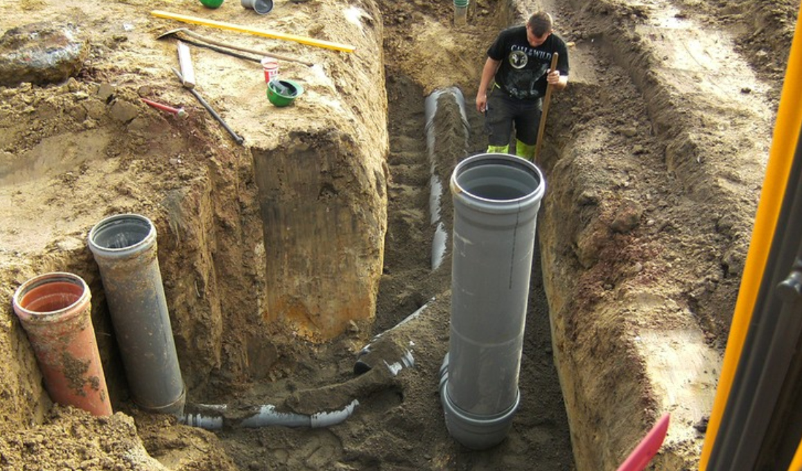
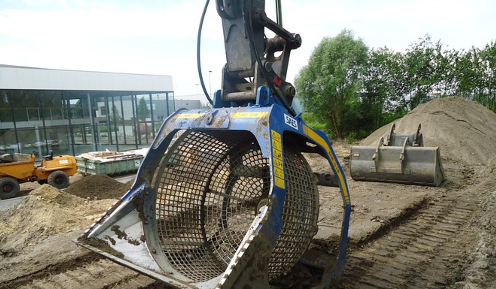

DE BASIS VAN KWALITEIT...
0475 24 57 91

DE BASIS VAN KWALITEIT...
0475 24 57 91

Welkom op de website van Grondwerken De Saegher en Zoon.
Reeds sinds 1984 zijn wij actief in de grondwerken. Ons familiebedrijf is met de jaren vergroot, en vandaag staan we met ons uitgebreid en goed onderhouden machinepark klaar om al uw wensen in te vullen!
Vader Frans De Saegher startte het bedrijf in Sint-Gillis-Waas, en zoon Guy werd na schooltijd klaargestoomd ter opvolging.
Ondanks zijn jarenlange ervaring in de sector, laat grondwerken DE SAEGHER zich op vandaag nog steeds inspireren door de traditionele waarden van een ambitieus familiebedrijf.
Elke dag streeft ons team ervaren medewerkers naar een optimale klantentevredenheid.
Ieder werk proberen wij uit te voeren alsof het voor onszelf was.
We proberen kwaliteit te optimaliseren, en hiervoor is ook stiptheid in onze afspraken een belangrijke peiler.
Aangezien ons team van een 10-tal werknemers flexibel beschikbaar staat, kan uw werk op korte termijn tot een goed einde gebracht worden.
Ons personeel is ervaren en gedreven. Onze werknemers beschikken over een VCA-dipoloma. "VCA" staat voor "Veiligheids Checklist Aannemers", en is een gecertificeerd veiligheids-beheerssysteem, waarmee een bedrijf aantoont dat het veilig wil en kan werken. Ons team legde hiervoor met succes een examen af.
De markt eist steeds meer dat we aan strengere veiligheidseisen voldoen, hiervoor is de VCA certifiëring een belangrijke waarborg.Veiligheid is voor al onze medewerkers van groot belang.
Op zoek naar een proffecional die uw grondwerken uitvoerd? Zoek niet verder, want dit is helemaal het kolfje naar de hand van deze firma. Dankzij de jarenlange ervaring in de sector garanderen wij u een vakkundige aanpak.
Voor een vakkundige uitvoering van uw afbraakwerken kunt u vertrouwen op onze expertise. ons dynamisch bedrijf heeft alle oplossingen voor handen om uw afbraak tot een goed einde te brengen. vraag uw offerte.
Als u opzoek bent naar een proffecional die u bijstaat bij uw betonwerken, zoek dan niet verder. Wij voeren allerhande asfalteringswerken uit en met onze jarenlange ervaring zijn wij als asfalteringsspecialist een uitstekende keuze.